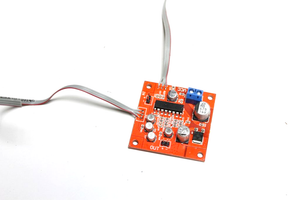

NOTE: I have done another version of this build which can be found in the below link. It's a better version and makes building this a whole lot easier
https://www.instructables.com/Dub-Siren-V3-555-Project/
My first dub siren build was a little over complicated. Although it worked well, you needed 3 x 9V batteries to power it which was overkill and I had to build the main circuit on a prototype board.
The first video is a demo of the sounds that you can make with the dub siren. The second is a longer one of the build
This time around I designed a PCB for the dub siren and had it printed.
This saved a lot of space and pretty much removes any wiring issues.
Along with the custom PCB , the dub siren also includes a echo module and a stereo module, both off the shelf.
The great thing about including an echo module is you get a really rich sound out of the dub siren and it add's another sound level altogether.
I also manged to get the battery down to 1 li-po phone battery which is rechargeable.
There is still a lot of wires as you need to connect 7 pots to the dub siren and echo module but it's a whole lot easier when you have pins on the PCB's to connect to.
Including a stereo module means you don't have to plug it into a speaker. Although you still can plug it into one if you want to and really get it pumping.


Parts:
Dub Siren Circuit
You can find the schematic, Board and Gerber flies in the next step.
You'll need to send the gerber files which is in a zip file to a PCB manufacturer like JLCPCBwho will print them for you.
The parts list is below:
For the resistors - just by these in assorted lots - eBay


I have started to design my own PCB's using Eagle.
If you are interested in getting into designing your own then I highly recommend Sparkfun's tutorials on schematic and board design.
They are easy to understand and once you get the hang of it, easier than you think.
You can't attach zip files to Instructables pages so I have linked all of the files to my Google drive.
The zip file has all of the gerber files which you need to get the PCB printed.
Just save that file and sent it to your favourite PCB manufacture.
I use JLCPCB but there are plenty of others you can use.
I've also included a PCB which has all of the pots included on the circuit board.
It means that you don't have to solder all of those wires to the circuit board.
However, it will limit where you can add the pots to the case.
Up to you which one you want to use.


First thing to do is to put the dub siren together.
If you follow the values on the PCB you won't have any issues with getting it going.
However, it's always good practice to test out the circuit before you move onto the next step.
Steps:




This mod is one that the manufacturers suggest to do if you want to control the echo.
I wish that they would just add the pot but unfortunately they have only have added a reverb pot.
I did an Instructable on how to use this module so if you want further info check it out here
Steps:

The dub siren takes 4 circuits altogether. 3 are off the shelf ones you can get from eBay and the 4th is the dub siren PCB you'll need to get printed.
The below image is a guide on how all of the circuits join together.
You can see that to power the dub siren i used a mobile phone battery.
The charging module that it is connected to is also a voltage regulator (pretty neat hey!).
I did an Instructable on how to use one of these modules and wire it up which you can find here.


For the case I went with an retro style intercom. You could use anything really, as long as it has enough room inside for all of the components. A cigar box would also make a great case.
I'll go through how I modded the case in the following steps
Steps:


This is always an important step to do.
You want to lay out all of the components that need to go inside the case to make sure they will fit.
I had to also take into consideration the speaker on the top side of the case as well.
You can see that the audio amp that I used came with a volume pot. As the dub siren circuit already have one, I didn't need to have this outside the case.


Once you have the case gutted and have a good idea where the circuits are going to go, next thing to do is to add some pots.
You need to add 5 pots for the dub siren (all 50K) and 2 for the echo module.
Note that the echo module already has one attached to the circuit board.
I decided to use this to secure the circuit board as well to the case.
Steps:


Ok - so this step isn't necessary but if you want to be able to plug your dub siren into an external speaker, then I highly recommend doing it.
You'll also be able to plug it into a mixer as well and play along with any music you want to at the right volumes.
The type of audio jack I used turns off the speaker inside the case when a jack is plugged into it.
Steps:


Making the decision to remove the switches which were on the intercom meant that I had to add my own.
To do this I used some opal acrylic which I thought would be good to have the LED blink behind it.
I actually turned out way better then I thought it would and I'm happy I made the decision to remove the switches.
The momentary switch is an important part of the dub siren. it give you control of when to add some siren sounds.
The other switch turns off the momentary one and the dub siren just plays continuously.
Steps:


The dub siren circuit board needs a lot of wires to connect up to all the pots etc.
It probably would have been easier to just design the board with surface mounts pots which would have cut down on the wiring.
I did design a board like this and the board and gerber files can be found in step 2.
Steps:


Final stage now - time to connect all those wires to the components.
Wire seems to take up a lot of space in any build like this so you need to take into consideration the room that it will take in the case.
I tried to keep the wiring as neat as possible as it helps to trouble shoot later on if needed
Steps:


Well that's all there is to it. Now it's time to start to play around with your dub siren and see what sounds you can get out of it.
As previously mentioned, I use the speed and pitch quite often on the dub siren but it does a bunch more sounds.
Playing around with the echo will also give you some really rich, dimensional sound effects that will bring your dub siren playing to the next level.
Download some dub reggae music as well and start to add some sound effects to it. And have fun!